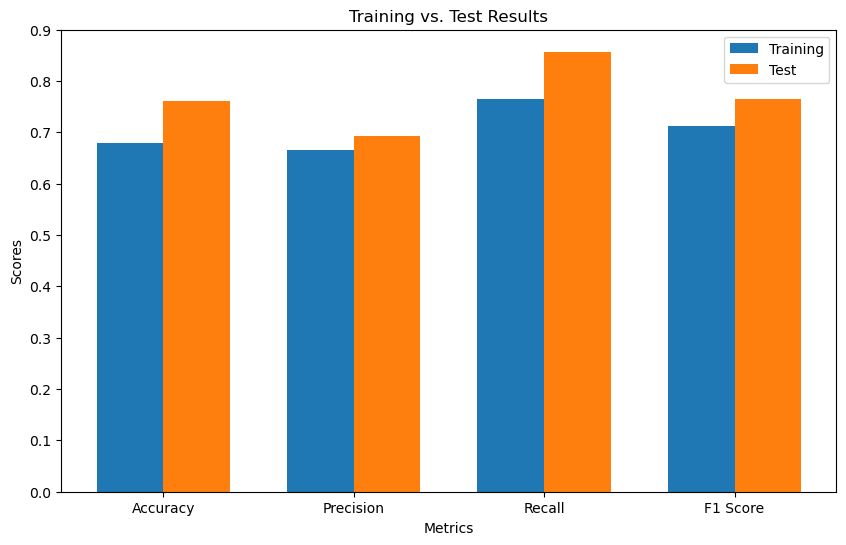
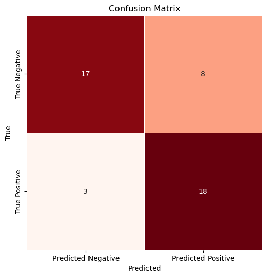
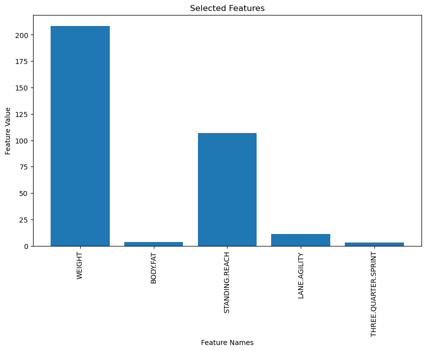
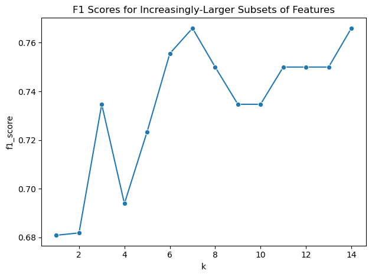

import pandas as pd
import numpy as np
import matplotlib.pyplot as plt
import seaborn as sns
from sklearn import svm
from sklearn.model_selection import train_test_split
from sklearn.pipeline import make_pipeline
from sklearn.preprocessing import StandardScaler
from sklearn.metrics import f1_score
from sklearn.feature_selection import SelectKBest, f_classif
from sklearn.naive_bayes import GaussianNB
from sklearn.naive_bayes import MultinomialNB
from sklearn.metrics import confusion_matrix, precision_score, recall_score, accuracy_score
combine_df = pd.read_csv("../../data/01-modified-data/cleaned_NBA_combine.csv")
combine_df = combine_df[combine_df["combine_year"]>2009]
combine_df = combine_df.dropna()
max_vert_mean = combine_df["MAX.VERTICAL"].mean()
combine_df["above_max_vert_mean"] = (combine_df["MAX.VERTICAL"]> max_vert_mean).astype(int)
label_vec = combine_df["above_max_vert_mean"]
drop_cols = ["Unnamed: 0", "POS", "Name", "MAX.VERTICAL", "STANDING.VERTICAL", "MAX.TOUCH", "above_max_vert_mean"]
feature_matrix = combine_df.drop(columns= drop_cols)
feature_cols = feature_matrix.columns.tolist()
#Naive bayes
clf = make_pipeline(StandardScaler(), svm.SVC())
clf.fit(feature_matrix, label_vec)
X = feature_matrix
y = label_vec
X_train, X_test, y_train, y_test = train_test_split(
X, y,
test_size=0.2,
random_state=5000
)
scaler = StandardScaler()
X_train_scaled = scaler.fit_transform(X_train)
clf = GaussianNB()
clf.fit(X_train_scaled, y_train)
X_test_scaled = scaler.transform(X_test)
test_predictions = clf.predict(X_test_scaled)
X_train_scaled_df = pd.DataFrame(X_train_scaled, columns=feature_cols)
X_test_scaled_df = pd.DataFrame(X_test_scaled, columns=feature_cols)
#Performance Metrics
accuracy_train = accuracy_score(y_train, clf.predict(X_train_scaled))
accuracy_test = accuracy_score(y_test, test_predictions)
precision_train = precision_score(y_train, clf.predict(X_train_scaled))
precision_test = precision_score(y_test, test_predictions)
recall_train = recall_score(y_train, clf.predict(X_train_scaled))
recall_test = recall_score(y_test, test_predictions)
f1_train = f1_score(y_train, clf.predict(X_train_scaled))
f1_test = f1_score(y_test, test_predictions)
#Bar chart
metrics = ['Accuracy', 'Precision', 'Recall', 'F1 Score']
train_results = [accuracy_train, precision_train, recall_train, f1_train]
test_results = [accuracy_test, precision_test, recall_test, f1_test]
plt.figure(figsize=(10, 6))
bar_width = 0.35
index = range(len(metrics))
plt.bar(index, train_results, bar_width, label='Training')
plt.bar([i + bar_width for i in index], test_results, bar_width, label='Test')
plt.xlabel('Metrics')
plt.ylabel('Scores')
plt.title('Training vs. Test Results')
plt.xticks([i + bar_width / 2 for i in index], metrics)
plt.legend(loc='upper right')
plt.show()
#Calculate metrics
conf_matrix = confusion_matrix(y_test, test_predictions)
precision = precision_score(y_test, test_predictions)
recall = recall_score(y_test, test_predictions)
accuracy = accuracy_score(y_test, test_predictions)
tn, fp, fn, tp = conf_matrix.ravel()
specificity = tn / (tn + fp)
npv = tn / (tn + fn)
F1 = f1_score(y_test, test_predictions)
#Graph confusion matrix
plt.figure(figsize=(8, 6))
sns.heatmap(conf_matrix, annot=True, fmt="d", cmap="Reds", linewidths=0.5, cbar=False, square=True)
plt.xlabel('Predicted')
plt.ylabel('True')
plt.title('Confusion Matrix')
plt.xticks([0.5, 1.5], ['Predicted Negative', 'Predicted Positive'])
plt.yticks([0.5, 1.5], ['True Negative', 'True Positive'])
plt.show()
print('Precision:', precision)
print('Recall:', recall)
print('Specificity:', specificity)
print('Negative Predictive Value:', npv)
print('F1 Score:', F1)
print('Accuracy:', accuracy)
#selectkbest feature selection
k = 5
selector = SelectKBest(score_func=f_classif, k=k)
X_new = selector.fit_transform(feature_matrix, label_vec)
selected_feature_indices = selector.get_support(indices=True)
feature_names = feature_matrix.columns.tolist()
plt.figure(figsize=(10, 6))
plt.bar(range(len(selected_feature_indices)), X_new[0])
plt.xlabel('Feature Names')
plt.ylabel('Feature Value')
plt.title('Selected Features')
plt.xticks(range(len(selected_feature_indices)), [feature_names[i] for i in selected_feature_indices], rotation=90)
plt.show()
def fscore_from_k(k_val):
X_selector = SelectKBest(f_classif, k=k_val)
X_selector.fit(X_train_scaled_df, y_train)
top_k_colnames = list(X_selector.get_feature_names_out())
print(top_k_colnames)
X_train_new = X_train_scaled_df[top_k_colnames].copy()
X_test_new = X_test_scaled_df[top_k_colnames].copy()
clf_k = GaussianNB()
clf_k.fit(X_train_new, y_train)
y_pred_new = clf_k.predict(X_test_new)
score_k = f1_score(
y_true = y_test,
y_pred = y_pred_new
)
return score_k
k_vals = list(range(1, 15))
fscores = [fscore_from_k(kv) for kv in k_vals]
fs_df = pd.DataFrame({'k': k_vals, 'f1_score': fscores})
plot_obj = sns.lineplot(data=fs_df, x='k', y='f1_score', marker='o')
plt.title("F1 Scores for Increasingly-Larger Subsets of Features")
plt.tight_layout()
plt.show()


Precision: 0.6923076923076923
Recall: 0.8571428571428571
Specificity: 0.68
Negative Predictive Value: 0.85
F1 Score: 0.7659574468085107
Accuracy: 0.7608695652173914
['THREE.QUARTER.SPRINT']
['BODY.FAT', 'THREE.QUARTER.SPRINT']
['BODY.FAT', 'STANDING.REACH', 'THREE.QUARTER.SPRINT']
['BODY.FAT', 'STANDING.REACH', 'LANE.AGILITY', 'THREE.QUARTER.SPRINT']
['HEIGHT', 'BODY.FAT', 'STANDING.REACH', 'LANE.AGILITY', 'THREE.QUARTER.SPRINT']
['HEIGHT', 'WEIGHT', 'BODY.FAT', 'STANDING.REACH', 'LANE.AGILITY', 'THREE.QUARTER.SPRINT']
['HEIGHT', 'WEIGHT', 'BODY.FAT', 'STANDING.REACH', 'WINGSPAN', 'LANE.AGILITY', 'THREE.QUARTER.SPRINT']
['HEIGHT', 'WEIGHT', 'BODY.FAT', 'STANDING.REACH', 'WINGSPAN', 'LANE.AGILITY', 'SHUTTLE.RUN', 'THREE.QUARTER.SPRINT']
['HEIGHT', 'WEIGHT', 'BODY.FAT', 'STANDING.REACH', 'WINGSPAN', 'LANE.AGILITY', 'SHUTTLE.RUN', 'THREE.QUARTER.SPRINT', 'BENCH.PRESS']
['HEIGHT', 'WEIGHT', 'BODY.FAT', 'STANDING.REACH', 'WINGSPAN', 'HAND.LENGTH', 'LANE.AGILITY', 'SHUTTLE.RUN', 'THREE.QUARTER.SPRINT', 'BENCH.PRESS']
['HEIGHT', 'WEIGHT', 'BODY.FAT', 'STANDING.REACH', 'WINGSPAN', 'HAND.LENGTH', 'HAND.WIDTH', 'LANE.AGILITY', 'SHUTTLE.RUN', 'THREE.QUARTER.SPRINT', 'BENCH.PRESS']
['HEIGHT', 'WEIGHT', 'BODY.FAT', 'STANDING.REACH', 'WINGSPAN', 'HAND.LENGTH', 'HAND.WIDTH', 'LANE.AGILITY', 'SHUTTLE.RUN', 'THREE.QUARTER.SPRINT', 'BENCH.PRESS', 'STANDING.TOUCH']
['HEIGHT', 'WEIGHT', 'BMI', 'BODY.FAT', 'STANDING.REACH', 'WINGSPAN', 'HAND.LENGTH', 'HAND.WIDTH', 'LANE.AGILITY', 'SHUTTLE.RUN', 'THREE.QUARTER.SPRINT', 'BENCH.PRESS', 'STANDING.TOUCH']
['HEIGHT', 'WEIGHT', 'BMI', 'BODY.FAT', 'STANDING.REACH', 'WINGSPAN', 'HAND.LENGTH', 'HAND.WIDTH', 'LANE.AGILITY', 'SHUTTLE.RUN', 'THREE.QUARTER.SPRINT', 'BENCH.PRESS', 'WINGSPAN.HEIGHT.RATIO', 'STANDING.TOUCH']
